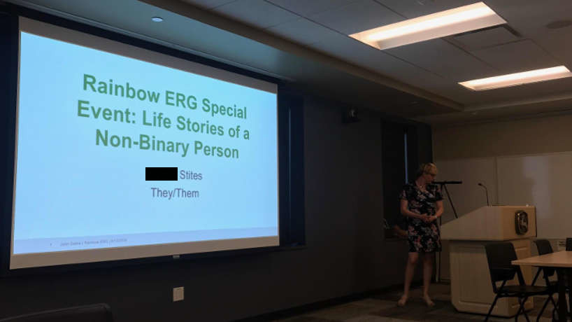

During my internship with John Deere, I took on a number of Diversity & Inclusion Iniatives. The highlight of my summer was giving a presentation with over 200 attendees: 'Rainbow ERG Special Event: Life Stories of a Non-binary Person'.
This presentation was centered around my story: my identity, my identity journey, and experience interacting with the world as a non-binary person. I encouraged attendees to question how they see the world, understand that people have different lived experiences, help people have empathy for people unlike themselves, and to be able to translate that empathy into allyship.